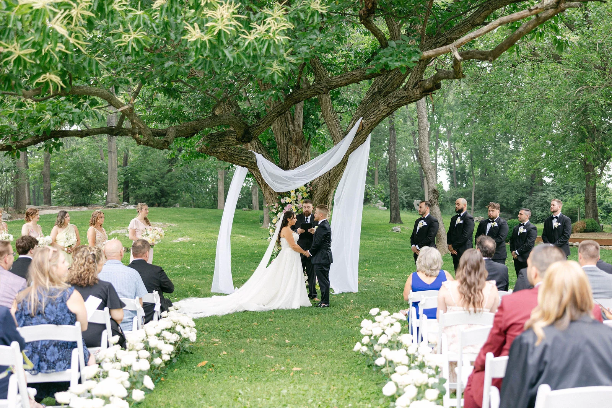
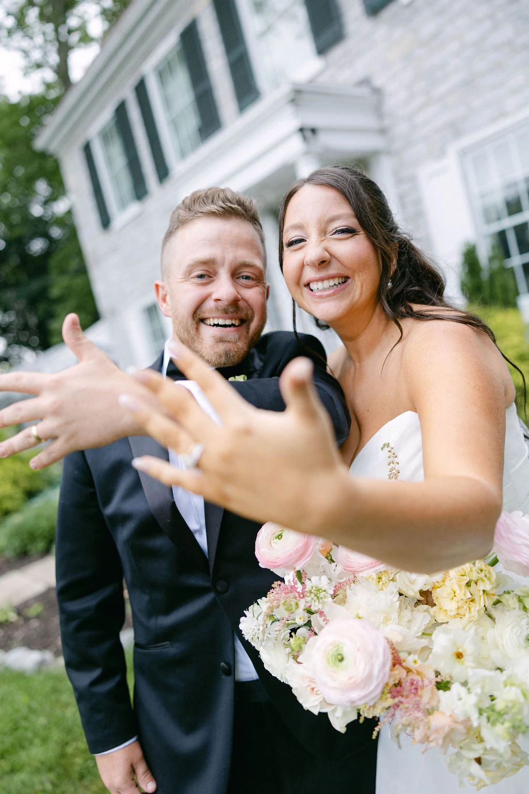
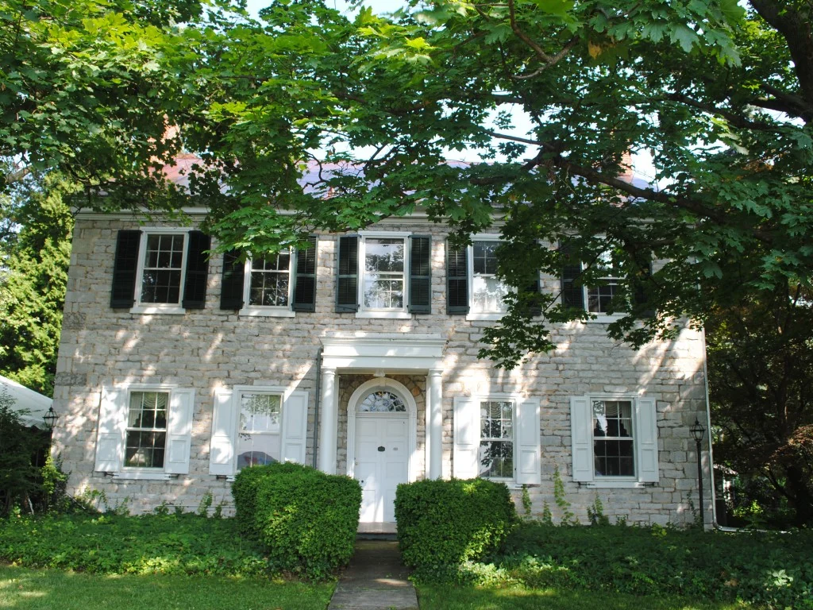
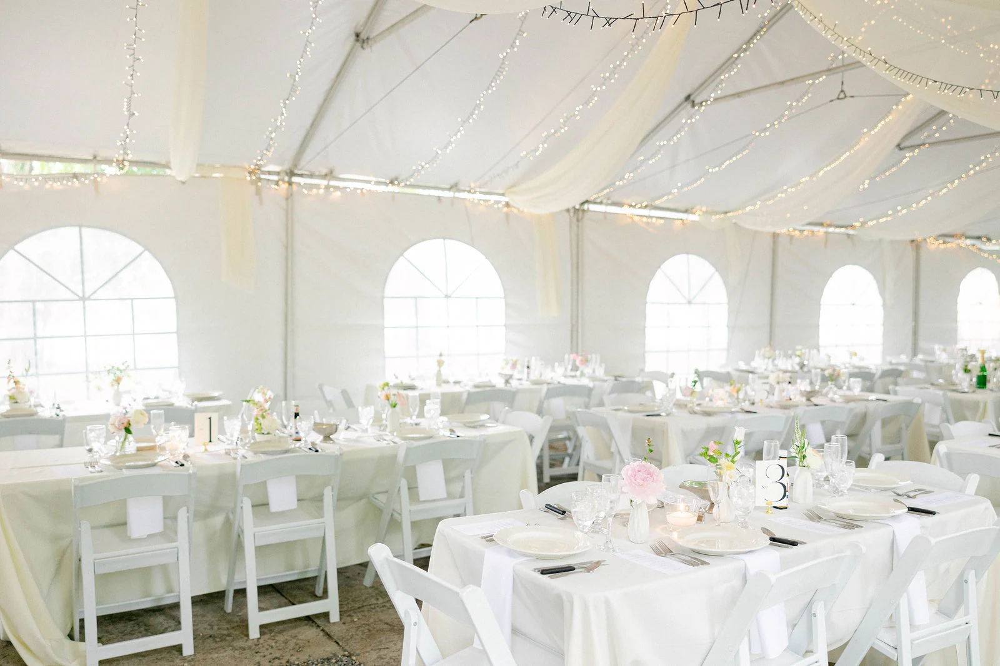
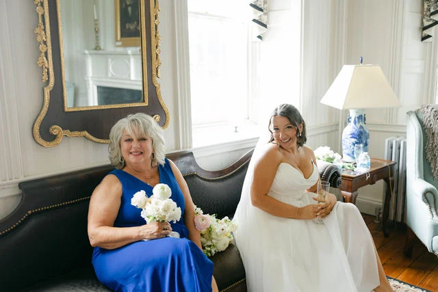
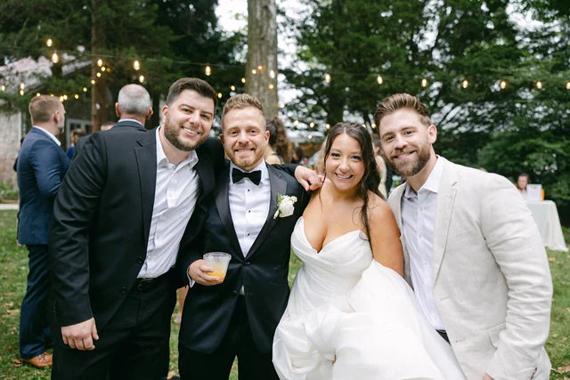
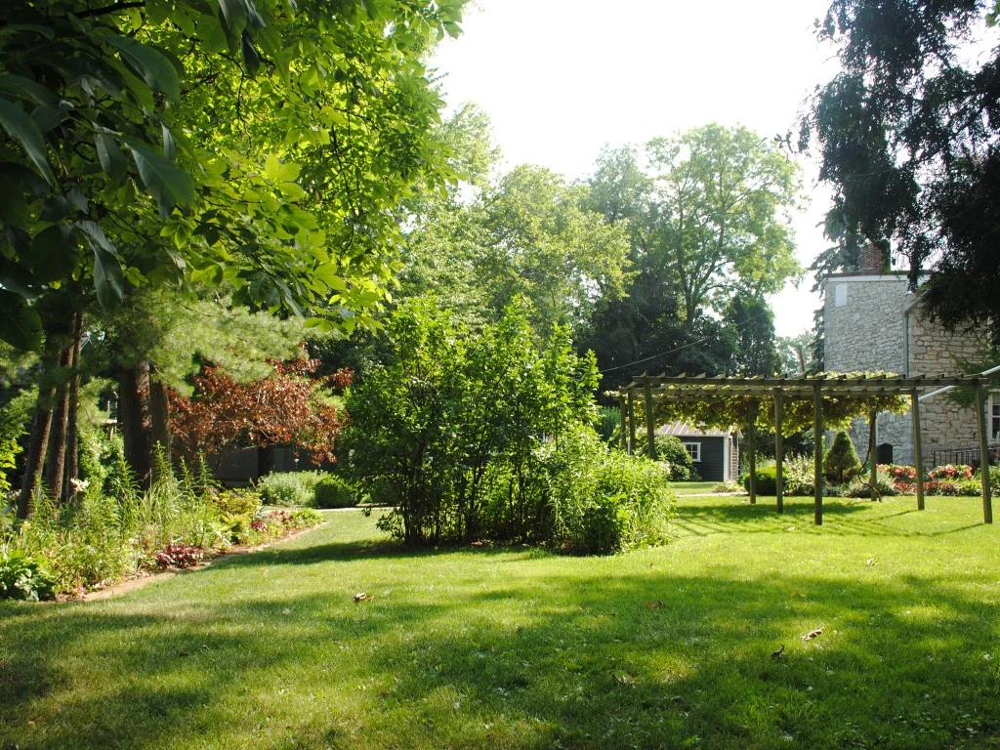

Justace Faith Photo01
Say your vows
Gather your favorite people in a garden setting, with the house and mature trees giving the day its sense of place.
A historic wedding venue in Carlisle, Pennsylvania
Make a little history of your own at Two Mile House—a house and garden setting for a celebration that feels like you.

Justace Faith Photo
CCHSA place with a story
A historic Carlisle house. A garden full of possibility. A setting that feels special before you add a single flower.
Built in 1820, Two Mile House brings together wooded grounds, outdoor patios and inviting period rooms. Bring your people, your ideas and the day you have been imagining.
Picture your celebrationFrom the first look to the last dance
Explore the house and grounds, then talk with our team about how your celebration could come together.

Justace Faith PhotoGather your favorite people in a garden setting, with the house and mature trees giving the day its sense of place.

Justace Faith PhotoPicture the conversations, the first dance and the people you cannot wait to share it all with. This is one couple’s celebration.

Justace Faith PhotoThe house’s preparation suites and period rooms offer a different kind of backdrop for the moments around the celebration.

Justace Faith PhotoYour day, your people
Choose the caterer, music, flowers and photographer that feel right for you. Two Mile House offers the flexibility to bring your own vendors, with recommendations available when you need a starting point.
A day in the life of Two Mile House
Real moments from Evan & Kaley’s wedding. A glimpse of the people, the place and what a celebration here can feel like.
Wedding photography by Justace Faith Photo. Styling and arrangements shown belong to this wedding.
A little planning, a lot to look forward to
You do not need every detail figured out to begin a conversation.
Start with the spaces and moments that matter to you. The garden, the house and your people set the scene.
Use the calendar below to try the inquiry experience. Actual dates must be confirmed directly with the venue.
Ask about pricing, guest numbers, rental inclusions, access needs and weather arrangements before making plans.
A date to look forward to
Find a date that catches your eye, then tell us a little about the celebration you are imagining.
Sample availability · May 2027–April 2028.
Illustrative dates only. The venue must confirm actual availability.
| Mo | Tu | We | Th | Fr | Sa | Su |
|---|
Choose an example open date, or tell us you are flexible in the form.
Use arrow keys to move between open dates, and Enter to select.
We would love to hear what you have in mind
Try the form with sample details. This design preview does not send or save inquiries. Required fields are marked *.
Yes. CCHS’s venue information allows you to choose catering, music, rentals, flowers and photography. Recommendations are available on request.
Ask the venue team for current pricing, available rental options and a clear list of what is included.
Tell the venue team your estimated guest count so they can confirm the spaces and layouts that could work for your celebration.
Talk with the venue team about tent arrangements, seasonal considerations and a weather contingency before finalizing your plans.
Share the access needs of you and your guests. Confirm the actual routes, terrain, parking and facilities with the venue before booking.
No. All dates and statuses here are examples for design review. Selecting a date does not confirm availability, hold a date or make a booking.

CCHSMake a day of the possibilities
Come with your ideas. Picture your people here. Start a conversation about a celebration that feels like you.
1189 Walnut Bottom Road
Carlisle, Pennsylvania